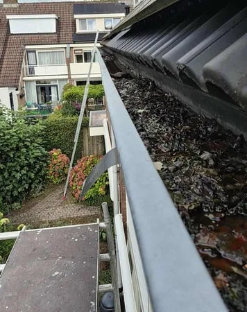
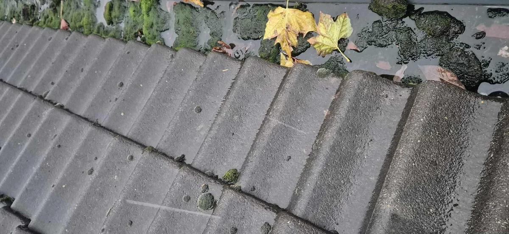
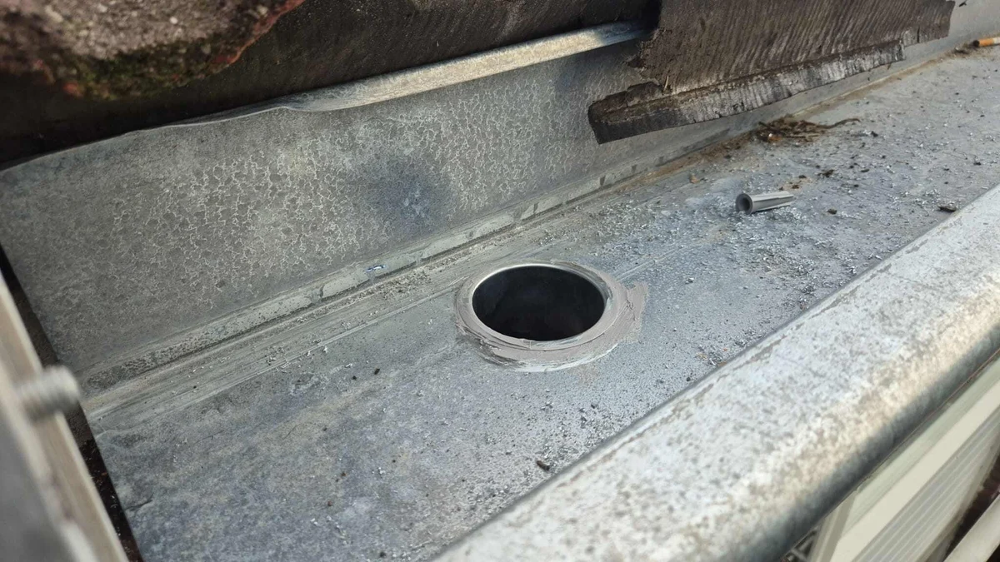

Dakgoot vervangen
De dakgoot voert het water wat op uw dak valt op een goede wijze af. Is uw dakgoot aan vervanging toe? Lees alles over uw dakgoot en neem contact op!
- ✓Omdat een koperen dakgoot nog slechts zelden voorkomt, gaan wij hier verder niet op in.
- ✓Een grove inschatting van de kosten zijn onderstaand weergegeven.
- ✓Kosten vervangen dakgoot voor PVC per meter €83,- per meter exclusief btw

Situaties uit de praktijk
Beelden van dakdetails, slijtage of werkzaamheden die passen bij dit onderwerp.


Wat u moet weten
Dakgoten zijn zeker geen overbodige of onbelangrijke onderdelen van uw woning of pand. Een dakgoot beschermd de gevel tegen regenwater wat door uw dak is opgevangen en zorgt ervoor dat het regenwater gereguleerd naar de hemelwaterafvoer wordt gebracht. Dakgoten bestonden vroeger veelal uit zink of koper, maar deze hoogwaardige materialen zijn een stuk duurder dan PVC. Tegenwoordig zien we dan ook steeds vaker dat er PVC wordt toegepast.
Koper en met name zink wordt ook tegenwoordig nog wel gebruikt als goot. Dit zien we voornamelijk terug bij monumenten en beschermde stadsaanzichten. Ook zijn de opties voor een esthetische afwerking wat uitgebreider dan in het geval van PVC.
Omdat een koperen dakgoot nog slechts zelden voorkomt, gaan wij hier verder niet op in.
Het juiste moment om een dakgoot te vervangen is voor een leek niet makkelijk om te bepalen. Wanneer uw dakgoot lekt, kan dit een duidelijke indicator zijn, dat uw goot aan vervanging toe is, maar dit hoeft niet. Het kan ook zo zijn, dat uw dakgoot ernstig vervuild is. Uw dakgoot is bedoelt om het water af te voeren. Wanneer er water in uw dakgoot blijft staan, duidt dit erop dat het afschot van uw dakgoot niet goed is. Soms kan dit hersteld worden en is vervanging niet nodig.
Schakel daarom altijd een expert in om te beoordelen of uw dakgoot aan vervanging toe is. Zo voorkomt u, onnodige kosten. Onze experts komen kosteloos en vrijblijvend langs op locatie om uw specifieke situatie te beoordelen.
Kosten vervangen dakgoot
De kosten voor het vervangen van een dakgoot kunnen nogal uiteenlopen. Een aantal zaken zijn nogal kostenbepalend. Denk hierbij aan; de hoogte, locatie, bereikbaarheid, de lengte en natuurlijk het materiaal.
Een grove inschatting van de kosten zijn onderstaand weergegeven.
Kosten vervangen dakgoot voor PVC per meter €83,- per meter exclusief btw
Kosten vervangen dakgoot zink per meter €192,50 per meter exclusief btw
Let op, dit betreft vervangen en dus ook alle werkzaamheden, om de oude goot te verwijderen, de nieuwe goot aan te brengen en het vrijkomende materiaal af te voeren, zijn bij deze prijs inbegrepen. Benieuwd naar de kosten in uw situatie? Neem contact op voor een offerte op maat!
Advies of meer informatie nodig?
Onze experts staan voor u klaar. Ontvang gratis advies of meer informatie over uw specifieke situatie!
Wilt u zekerheid over uw dak?
Laat de situatie beoordelen voordat schade groter wordt. U krijgt helder advies over wat nodig is, wat kan wachten en welke oplossing duurzaam is.